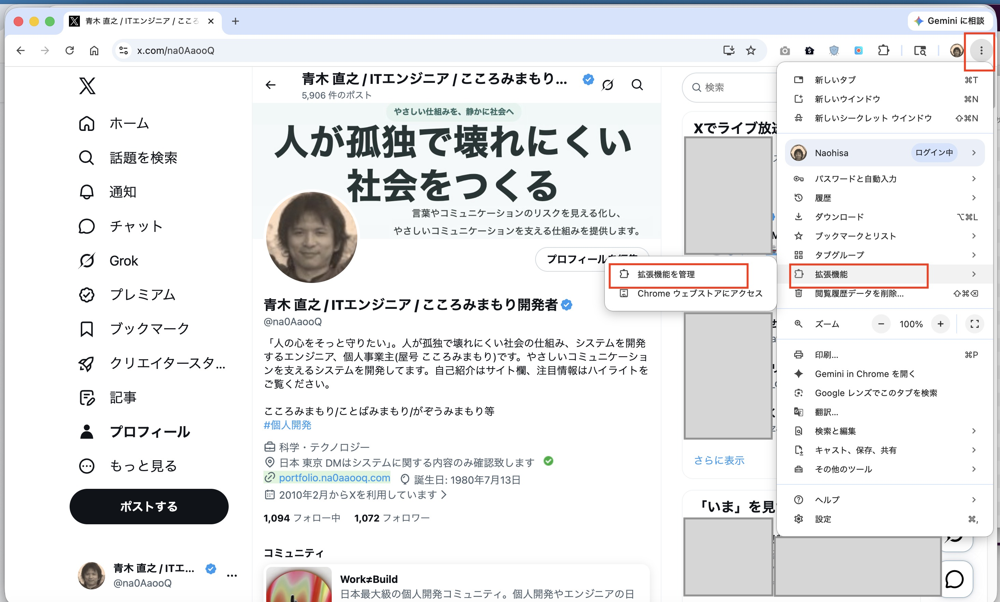
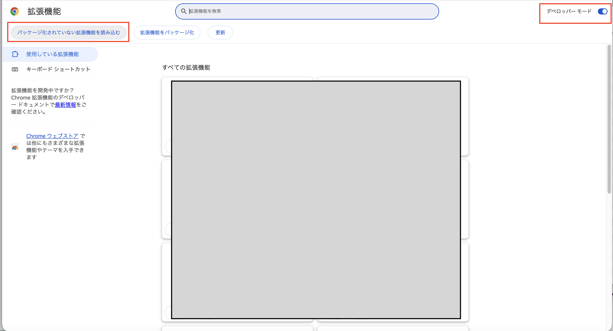
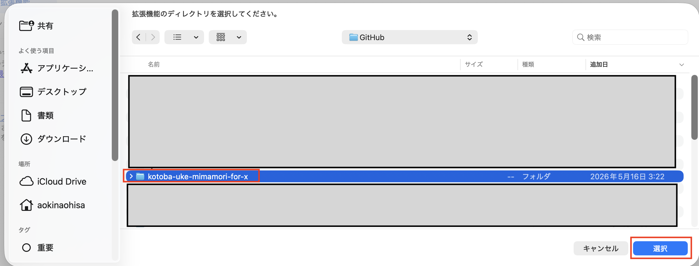
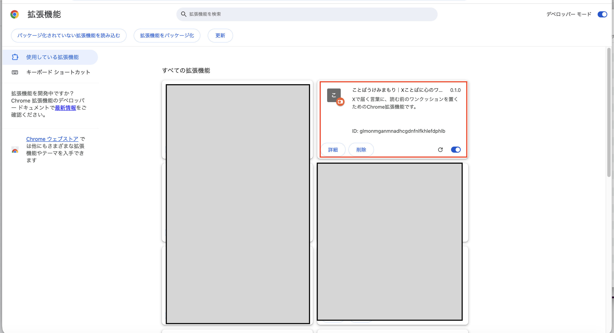

目次
サービス説明資料
ことばうけみまもりの考え方、主な機能、プライバシー面の安心設計をPDFでも確認できます。
サービス説明資料PDFを見る1. 公開前の手動確認版を読み込む
ここで紹介する読み込み手順は、Chrome Web Store公開前の手動確認版・開発版を使うためのものです。Chrome Web Store公開後は、ストアから拡張機能を追加する手順に差し替える予定です。
- 拡張機能
kotoba-uke-mimamori-for-xをダウンロードします。 - 拡張機能
kotoba-uke-mimamori-for-xは 拡張機能のGitHubリポジトリ を表示して、画面右上の「Code」->「Download ZIP」でダウンロードします。 kotoba-uke-mimamori-for-x-main.zipというZIPファイルがダウンロードされます。- 任意のディレクトリで、
kotoba-uke-mimamori-for-x-main.zipを展開します。 kotoba-uke-mimamori-for-x-mainというディレクトリが展開されるので、kotoba-uke-mimamori-for-xというディレクトリ名に名称変更します。- Chrome右上メニューから「拡張機能」→「拡張機能を管理」を開きます。
- 拡張機能画面でデベロッパーモードをONにします。
- 「パッケージ化されていない拡張機能を読み込む」をクリックします。
kotoba-uke-mimamori-for-xディレクトリを選択します。- 拡張機能一覧に「ことばうけみまもり」が表示されることを確認します。




2. 拡張機能アイコンを固定する
Chrome右上の拡張機能アイコンを開き、「ことばうけみまもり」を固定すると、ツールバーからpopupを開きやすくなります。

3. popupでON/OFF・表示されやすさを設定する
popupから、ことばうけみまもりのON/OFFと、ワンクッションの表示されやすさを変更できます。初期状態はOFFです。使いたいタイミングでONにしてください。
- ON/OFFを切り替えられます。
- 「少なめ」「標準」「多め」から表示されやすさを選べます。
- 設定変更後は、開いているXページを再読み込みすると反映されます。
- 投稿本文や判定結果は外部送信されません。


4. 詳細設定を確認する
popupの「詳細設定を開く」から、オプション画面を開けます。保存するのは、拡張機能のON/OFFと、ワンクッションの表示されやすさの設定だけです。

5. ワンクッションが表示されたとき
ONの状態で、心に負荷がかかる可能性のある表現を判定した投稿には、読む前のワンクッションが表示されます。
- 投稿本文はぼかされます。
- 「内容を表示する」を押すと本文を読めます。
- 「今は見ない」を押すと、本文ぼかしを維持したまま折りたたまれます。
- 投稿本文や投稿DOMを削除するものではありません。


6. 今は見ないを選んだ後
「今は見ない」を選ぶと、今は読まない状態にできます。あとから読みたくなった場合は「内容を表示する」から確認できます。

7. 内容を表示した後
「内容を表示する」を押すと、ぼかしが解除され、投稿本文が通常表示されます。

8. うまく動かないとき
- ON/OFFまたは表示されやすさを変更した後は、開いているX（旧Twitter）の画面ページを再読み込みしてください。
- ワンクッションを止めたい場合は、popupまたはオプション画面でOFFにしてから、X（旧Twitter）の画面ページを再読み込みしてください。
- 公開前の手動確認版では、拡張機能を読み込み直した後にXページも再読み込みしてください。
現時点では、設定をXの画面へ反映するタイミングをページの読み込み時としているため、設定変更後に再読み込みが必要です。
9. 大切にしていること
「ことばうけみまもり」は、投稿を完全に消すのではなく、読む前に一度立ち止まるためのワンクッションを置きます。いきなり読ませない一方で、読む自由と、今は読まない自由をユーザー自身に残すための補助ツールです。
Xにはミュートするキーワードなどの標準機能があります。本拡張機能はそれらを置き換えるものではなく、投稿を完全に見えなくする前に、読む前のワンクッションを置くための選択肢です。
X（旧Twitter）の投稿本文や判定結果は外部サーバーへ送信されません。判定はブラウザ内で行い、現時点で保存する設定値は enabled と cushionSensitivity のみです。
X（旧Twitter）の閲覧履歴や投稿URL、ユーザー情報、内部判定の詳細は保存せず、自動ブロックや自動通報も行いません。詳しくはプライバシーポリシーについてをご覧ください。